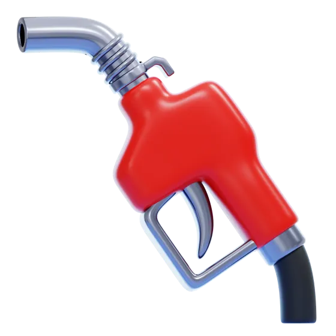
Abasteça em segundos
Hodômetro, valor e litros. Data e local entram sozinhos. Cabe na parada do posto.
Beta aberto · iPhone
Registre abastecimentos em segundos, descubra quanto sua moto faz de verdade e nunca mais esqueça uma troca de óleo. Nativo de iPhone, funciona até sem sinal.
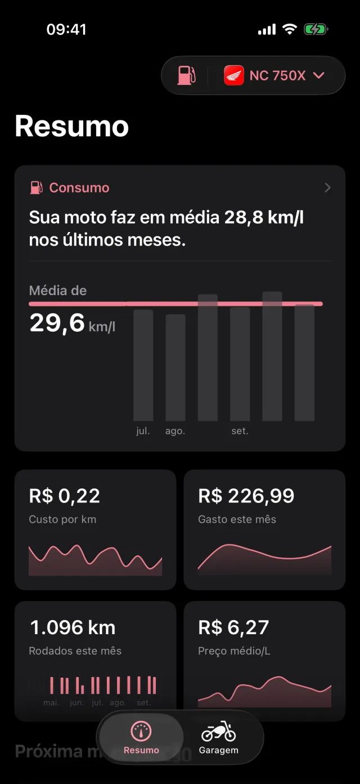
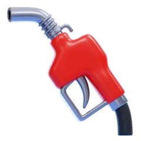
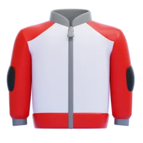
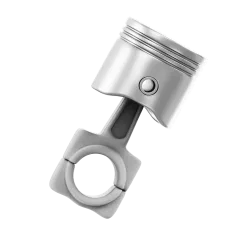

Hodômetro, valor e litros. Data e local entram sozinhos. Cabe na parada do posto.
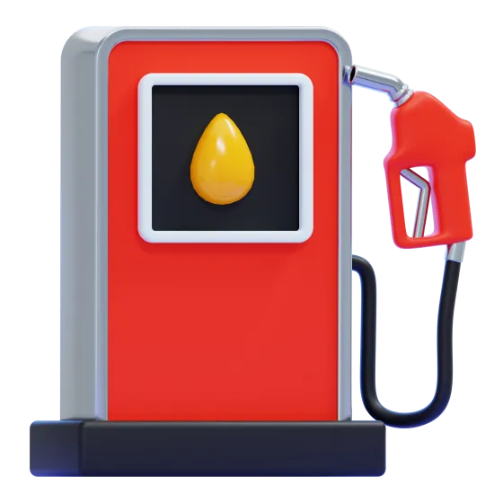
Calculado de tanque cheio a tanque cheio, o jeito que não mente. Nada de média inflada.
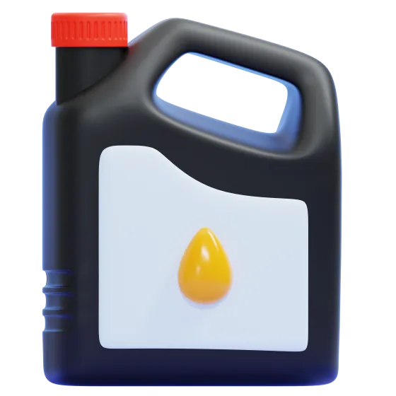
Óleo, pneus, relação e freios. O app avisa antes de vencer, por quilômetro ou por data.
Recursos
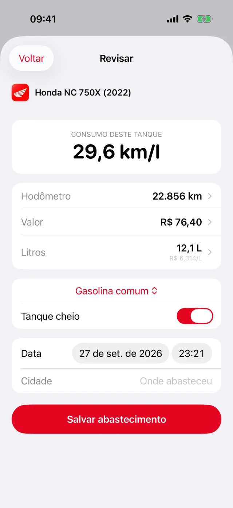
Registro
O app lembra o último combustível, calcula o preço do litro na hora e mostra o consumo daquele tanque antes de salvar. Tem o cupom? Toque em Escanear: a foto é lida no próprio iPhone e nunca sai dele.
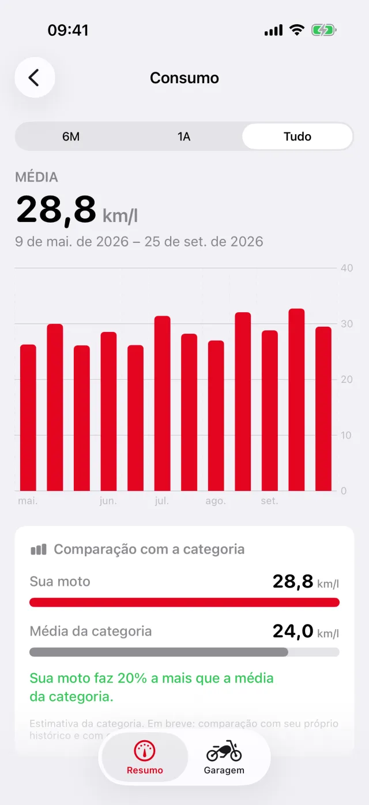
Consumo
Gráfico tanque a tanque, média do período e comparação com motos da mesma categoria. Descubra se a viagem de serra rendeu mais que o trânsito da semana.
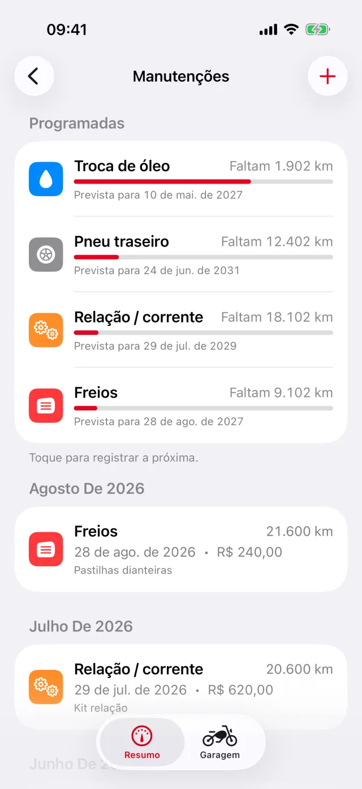
Manutenção
Defina intervalos por km e por meses. A barra mostra quanto falta e uma notificação chega antes de vencer. O histórico fica guardado, pronto para mostrar a quem for comprar sua moto.
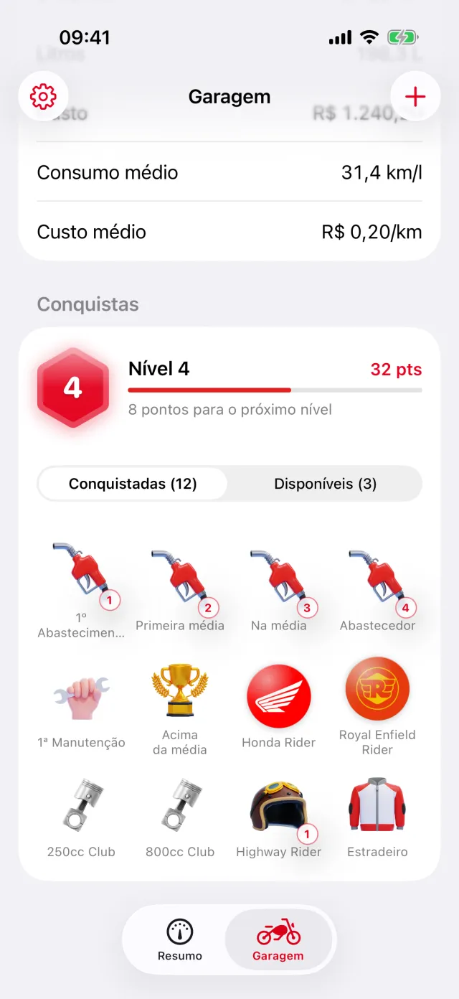
Garagem
O app veste a cor da marca da moto ativa. Recordes, totais de toda a vida e um nível que sobe conforme você roda.
Conquistas
25 medalhas com pontos por dificuldade e níveis que sobem de verdade. É só reconhecimento: nenhuma função fica trancada atrás de medalha.
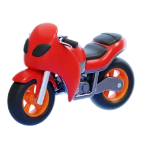
Speed Demon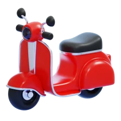
Urban Rider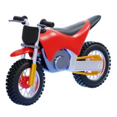
Off-road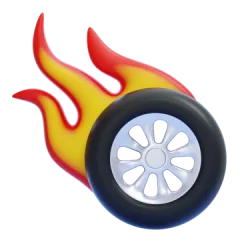
Iron Butt · em breveRoadmap
“A moto leva seus eventos. Você mantém sua história.”
O plano é que o histórico pertença à moto, não ao dono. Quando ela for vendida, manutenções, quilometragem e consumo vão junto, e um histórico confiável vale dinheiro no mercado de usados.
Abastecimento rápido, consumo real, leitura do cupom, manutenção programada, garagem com várias motos, medalhas e sincronização com a sua conta Apple.
Motociclistas de verdade usando no dia a dia pelo TestFlight. É aqui que você entra: cada abastecimento registrado ajuda a decidir o próximo passo.
Entrar no betaO histórico passa a pertencer à moto. Cada registro guarda quem o fez, para sempre.
Vendeu a moto? Um código passa a posse e o comprador recebe o histórico completo.
Seus quilômetros e conquistas continuam seus depois da venda. Documentos da moto (nota, recibos, certificados) ligados a ela. E prova de que o histórico não foi adulterado.
Consumo real comparado ao de fábrica, clima em cada abastecimento, diário e viagens, desafios de longa distância como o Iron Butt e, um dia, comunidade.
Bastidores
O Carburante é um projeto pessoal de Wagner Rosa, Senior Product Designer. Pesquisa, definição de produto, design de interface e o app em Swift nativo, de ponta a ponta.
Registrar um abastecimento precisa caber na parada do posto. Cada campo novo teve que justificar a própria existência.
Posto de estrada não tem sinal. Tudo é salvo no aparelho e sincroniza quando der, sem perder uma edição.
Testei ler o display da bomba por foto: não é confiável. O app lê o cupom impresso, onde funciona, e deixa o resto para uma revisão rápida.
Sucesso do MVP é o motociclista voltar e registrar mais de três abastecimentos. Social, ranking e o passaporte esperam essa resposta.
Você precisa de um iPhone com iOS 18 ou mais recente. Mande um email e eu envio o convite do TestFlight, o app oficial da Apple para versões beta.
Pedir convite por emailcontato@wagnerrosa.com
Perguntas
Sim, durante todo o beta. O modelo para a versão da App Store ainda está sendo definido, e quem testou agora vai saber primeiro.
Não por enquanto. O Carburante é nativo de iPhone de propósito: rápido, leve e com a cara do sistema.
Não. Abriu, usou. Se quiser levar seus dados para outro aparelho, entre com a sua conta Apple, e o que você já registrou continua lá.
Primeiro no seu iPhone. Uma cópia fica na nuvem, isolada na sua conta, para você não perder nada. A foto do cupom é lida no aparelho e não é enviada. As estatísticas de uso são anônimas e dá para desligar nos Ajustes.
Porque consumo honesto se mede entre dois tanques cheios: o primeiro é o ponto de partida. O app mostra quantos abastecimentos faltam para a primeira média aparecer.
O código está público no GitHub para quem quiser conhecer como o app é feito. Se gostar, deixe uma estrela, isso ajuda muito.